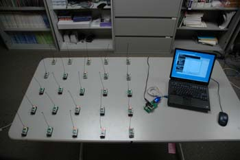
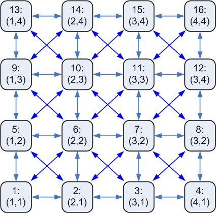

Since TinyOS does not provide geographic routing or location discovery, and a real multi-hop networks would require too much space, Agilla assumes a multi-hop sensor network arranged in an n x m grid. A multi-hop network is achieved by modifying TinyOS's network stack to filter out messages from non-neighbors. A node can only communicate with its immediate neighbors as specified by the grid topology. Each node is identified by its integer (x,y) location. The lower-left corner of the network is (1,1) and the x and y coordinates increase going left and up, respectively. The mote connected to the base station is at (0,0). Each node in the grid can communicate with its immediate horizontal, vertical, and diagonal neighbors, for a maximum of 8 neighbors. The base station node can communicate with any node on the first row.
Below is a 5 x 5 network:

By assuming a grid topology, we corrolate the mote ID with its location as follows:
ID = x + (y-1)*(number of columns)
Alternatively, given the node ID, its location can be calculated as follows:
x = [(ID-1) mod (number of columns)] + 1
y = (ID – x)/(number of columns) + 1
For example, in a 4x4 network, the nodes would have the following
IDs and locations:

Agilla implements a simple greedy-forwarding where each agent simply looks at its neighbors and forwards a message to whichever neighbor is closer to the ultimate destination. It does not adopt to node failure or perform neighbor discovery.
To change the network grid size, open <agilla>/types/Agilla.h and <java>/edu/wustl/mobilab/agilla/variables/AgillaLocation.java and change NUM_ROWS and NUM_COLUMNS. Once done, recompile and re-install Agilla on all motes.
To install the NesC portion of Agilla, you can use an included gawk script that streamlines the installation process. Use it by going to <agilla> and typing gawk -f installer_m2.awk for Mica2 motes, or gawk -f installer_mz.awk for MicaZ motes. Alternatively, if you added the Agilla aliases to your /etc/profile, just type riall_m2 or riall_mz anywhere for Mica2 and MicaZ motes, respectively.
To recompile the Java portion, type mj if you have the Agilla aliases setup, or go to <java>/edu/wustl/mobilab/agilla/variables/ and type make.